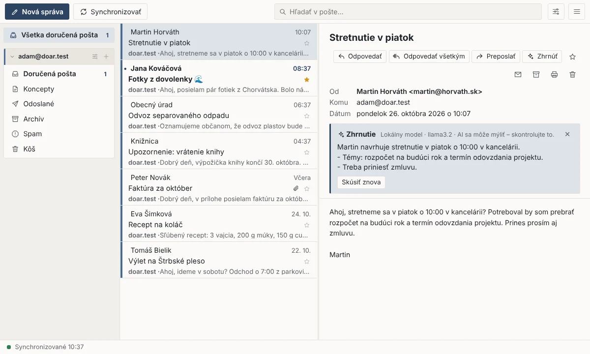

Jednoduchý e-mailový program pre Windows
V duchu starého Outlook Expressu: rýchly, prehľadný a zadarmo. Bez reklám, bez sledovania – vaša pošta zostáva u vás.

Všetko podstatné, nič navyše
Pre schránky s prístupom cez IMAP a SMTP – napríklad Azet, Zoznam, Gmail, Outlook.com alebo firemnú poštu.
Viac kont naraz
Všetky schránky na jednom mieste a spoločná doručená pošta. Kontá rozlíšite farbou.
Záloha a obnova
Celé konto zálohujete do jedného súboru a kedykoľvek ho obnovíte – aj do inej schránky, bez duplicít.
Aj bez internetu
Stiahnutú poštu čítate a hľadáte aj offline. Napísané správy sa odošlú, keď sa pripojíte.
Bezpečné čítanie
Sledovacie obrázky a skripty v e-mailoch sú zablokované. Odosielatelia nezistia, kedy ste správu otvorili (pokiaľ obrázky sami nepovolíte).
Voliteľná AI
Zhrnutie e-mailu, návrh odpovede, oprava a preklad textu. Len ak ju zapnete a len po kliknutí – s vlastným kľúčom alebo modelom priamo na vašom počítači.
Sám sa aktualizuje
Novú verziu ponúkne sám a nainštaluje ju až s vaším súhlasom. Po slovensky aj po anglicky.
Inštalácia za minútu
Žiadny inštalátor, žiadne zbytočnosti.
- Stiahnite súbor .zipTlačidlo hore stiahne najnovšiu verziu.
- Rozbaľte ho do svojho priečinkaNapríklad do Dokumentov (pravé tlačidlo → Extrahovať všetko). Nie do „Program Files“ – odtiaľ by sa program nevedel sám aktualizovať.
- Spustite Doar Mail.exeOdkazy v ponuke Štart a na ploche si vytvorí sám. Potom stačí zadať e-mail a heslo – nastavenia servera väčšinou nájde sám.
Časté otázky
Je Doar Mail naozaj zadarmo?
Áno. Je to otvorený softvér s licenciou MIT – bez reklám, predplatného a bez zbierania údajov o používaní.
Kde je moja pošta a heslá?
Na vašom počítači a na vašom poštovom serveri. Heslá sú uložené v zabezpečenom úložisku Windows. Doar Mail sa spája len s vašimi poštovými servermi a s GitHubom (kontrola novej verzie, dá sa vypnúť).
Musím používať AI?
Nie. AI je predvolene vypnutá a bez nej program funguje úplne rovnako. Ak ju zapnete, obsah sa odošle zvolenému poskytovateľovi (Anthropic, OpenRouter alebo lokálny model) len po kliknutí a vždy vidíte, čo a kam. Prílohy sa neodosielajú nikdy.
Windows zobrazil upozornenie – je to v poriadku?
Doar Mail zatiaľ nie je digitálne podpísaný, preto môže Windows pri prvom spustení zobraziť „Windows ochránil váš počítač“. Kliknite na Ďalšie informácie → Spustiť aj tak.
Dá sa preniesť pošta zo starého programu?
Ak je pošta na serveri (IMAP), stačí pridať konto. Zálohy vo formáte mbox (napr. z Thunderbirdu) viete obnoviť do schránky alebo otvoriť ako archív len na čítanie.